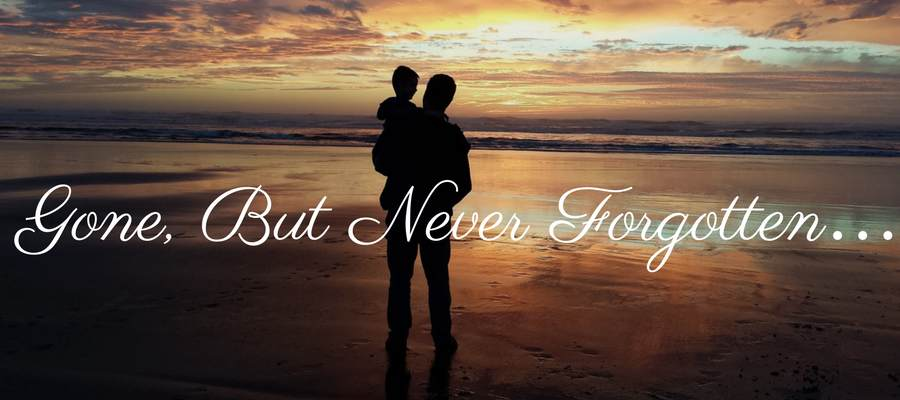

Hi! My Name is Nawal Suleiman and I am a Computer Eng/Full Stack Dev, from Jordan.
My Linkedin Personal Account
Bachelor’s Degree in Computer Engineering from Jordan University of Science and Technology and Full Stack JavaScript Application Development Certificate from Luminus Technical University College (LTUC)
I’m currently working at Al Ghurair Foundation for Education Their account on LinkedIn Open Linkedin ,My roles are Customer Support Specialist(The scope of work involves providing customer support services to Young Thinkers via email and Course content creation support(Course Support in Open EdX. Specifically, I upload course content (in English and Arabic) into an existing OpenEdX course (based on an existing template)) in AL GHURAIR YOUNG THINKERS PROGRAM Powered by Arizona State University.
Most of my experiences lie in Customer Care Services ,full-stack development and Linux server administration. I have worked with HTML/CSS, Javascript/NodeJS, some other languages like C# and C++.
Loves Family 👨👩👧 , Sherine Abdel-Wahab 💙, Coding 💻 , Reading Books 📚 & Watching Movies 🎥

About Me
R.I.P Dad
- My Family : My family consists of 8 members, my father ( may God have mercy on him)He passed away in 2006, my mother (may God protect her) works in voluntary work and she is a community woman. I have 4 sisters and one brother, my arrangement is the middle in the family, and we have 4 grandchildren.
I am from southern Jordan, from a city called Tafila. I grew up there and moved with my family to many Jordanian cities, but now I live in Tafila.
- My Core Values are : Honesty and loyalty,Mutual respect,Sencirty in work,Support and like each other and A passion to pursue and focus on our dreams
People need each other to live this life, more relationships mean more opportunities, helping each other if we can, healthy people make life so much better, and it's not a good idea to live alone.what motivates me to wake up in the morning every day is my passion, because I love what I do.And what keeps me awake at night is knowing that tomorrow is a new day to do something good for myself and for others so, I need a plan. 😇
- My three most important strengths: mentorship, agility, problem-solving, and efficient collaboration. I can benefit from my strengths by using them wisely and making others benefit from me.😎
- My lower three competencies :
Prioritization, judgment and competence of confidence, I should be more courageous in addressing and confronting any concerns I have, learning from and benefiting from other people's experiences. 😞
I try to maximize hard work , passion and never give up even if I fail sometimes. Then I need to focus on reducing my aspiration to others and making me disappointed because everyone has his own journey.
- When I'm out of work: You see me hanging out with my loved ones🤗, watching tennis matches 🎾because I love Roger Federer, or watching Real Madrid matches⚽ “Oh Barcelona fans”, don't hate me 🥵 , playing with the family's children 👩👦👦 , writing some thoughts or the most important thing, listening to my favorite singer Sherine Abdel Wahab.👩🎨💝
Side hustles I'm working on :
After all, if you are interested in seeing my CV (in both Arabic and English) for more information on education and work experiences,blow up the following 💣 :
English
Arabic
Contact Me
Please for any concerns or suggestions or questions don't be hesitate to send that to me :
Click Here to Send me EmailBefore leaving ,Remeber these words :
"Give up trying to be perfect and know that it is OK to make mistakes. Be natural, be yourself"
"Stop scaring yourself with thoughts about what might go wrong. Instead, focus your attention on thoughts and images that are calming and reassuring"
"Adopt A Laughing Mindset"
"Master Your Nonverbal Behavior"
YOU CAN GO NOW 😆